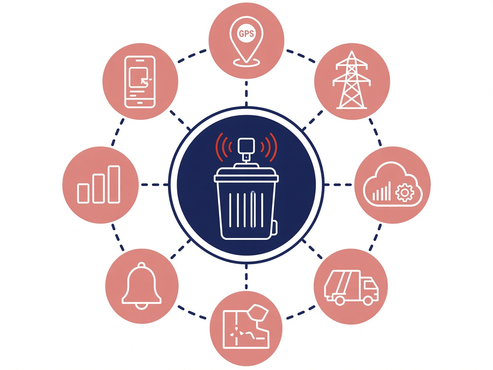
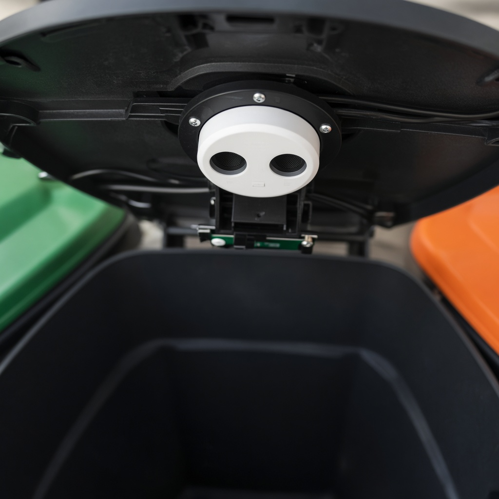
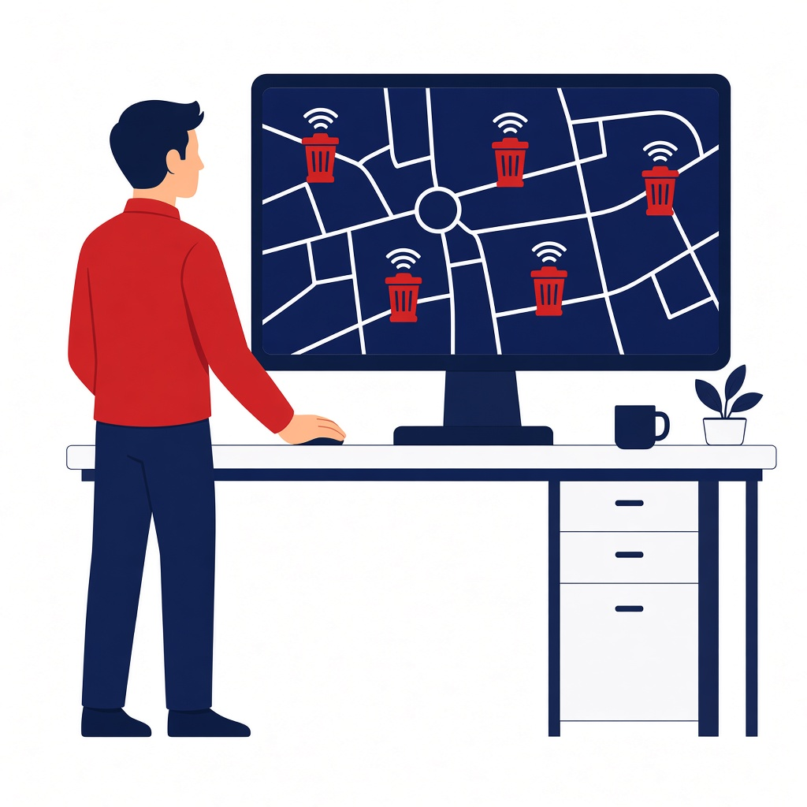
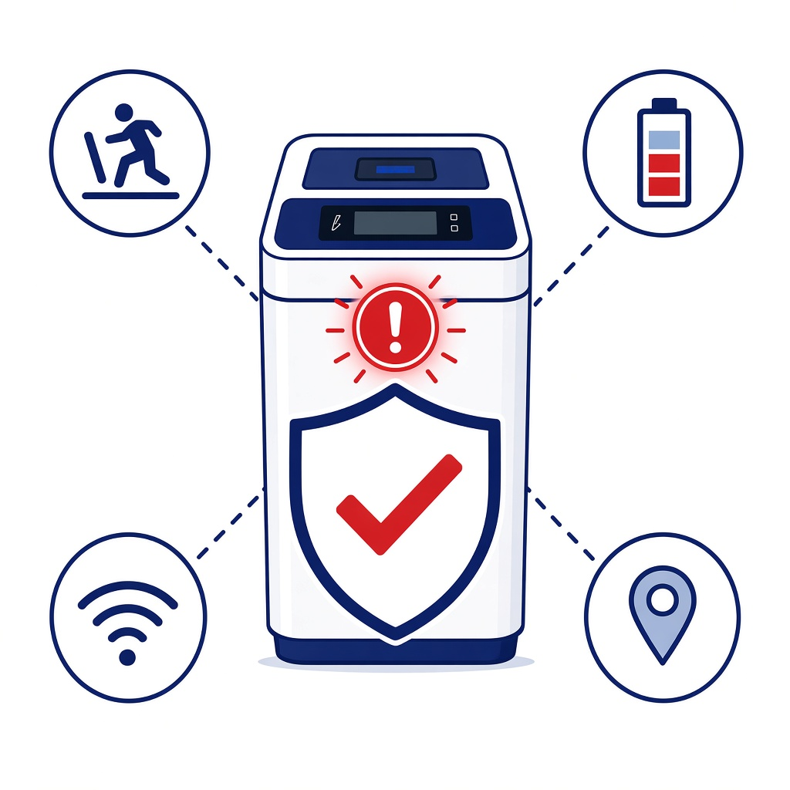
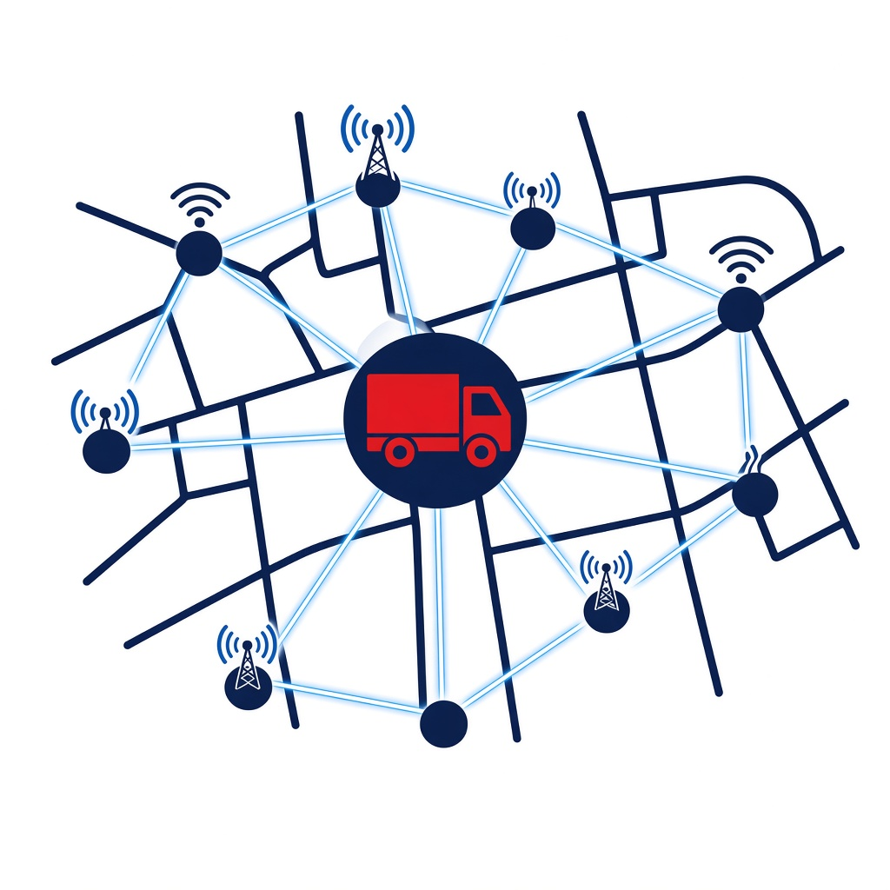
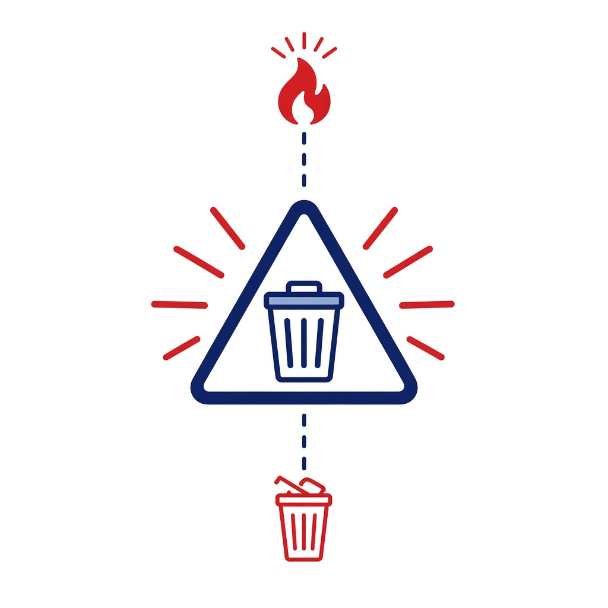
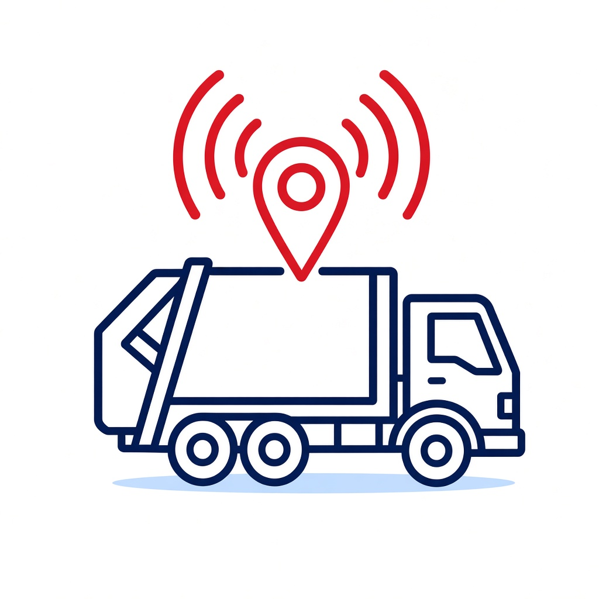
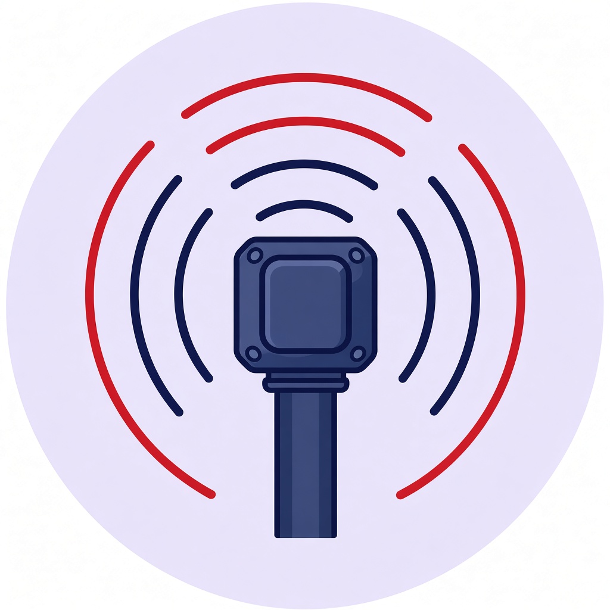

Real-Time Bin Fill Monitoring
Ultrasonic or radar sensors measure fill levels across bin types and sizes. Live data streams to your HyperThings dashboard so nothing overflows unnoticed.
Our Smart Waste Management Solution combines IoT bin sensors, LoRa / NB-IoT / GSM connectivity, cloud analytics, and dynamic route optimization — so municipal teams collect on demand, not on outdated fixed schedules.

Built for Every Ward. Every Route. Every Shift.
Ultrasonic or radar sensors measure fill levels across bin types and sizes. Live data streams to your HyperThings dashboard so nothing overflows unnoticed.
Automated notifications for full bins, fire risk, and tilt events — so supervisors act before incidents escalate into public complaints.
Assign pickup vehicles based on real fill demand. Replace fixed schedules with intelligent itineraries that cut empty runs and fuel waste.
Track trucks in real time, coordinate fleet dispatching, and keep collection operations visible from the central command center.
Forecast future fill levels, capture citizen feedback, and plan collection windows before bins tip into overflow.
Industry Applications

WHY HYPERTHINGS SWM
Not a standalone tracker bolted onto a bin. A fully integrated smart waste stack — sensors, connectivity, HyperThings IoT Platform, routing intelligence, and audit-ready reporting.





Waste Management Application
Hardware Options
Measure any type of waste in bins of various types and sizes — built for everyday municipal deployment.

Non-invasive fill measurement through plastic walls, screens, and borders — ideal for sealed or hazardous waste.
Deploy ultrasonic or radar bin sensors with LoRa, NB-IoT, or GSM connectivity on the HyperThings IoT Platform — from municipal wards to industrial campuses — with live dashboards, alerts, and optimized fleet dispatch. From city operations in India to smart-city programs across Asia and the Middle East — one platform, built for global scale.
Talk to Our Regional Team
Everything you need to know about Smart Waste Management
Fixed schedules send trucks whether bins are empty or overflowing. HyperThings triggers collection from real-time fill levels — so crews go where demand is, not where the calendar says.
Sensors transmit over LoRa, NB-IoT, or GSM — chosen to match city coverage, density, and gateway strategy. Data lands on the HyperThings IoT Platform for dashboards, alerts, and routing.
Ultrasonic suits open measurement across many bin types and sizes, with ~5-year replaceable batteries. Radar measures through plastic walls/screens, supports non-invasive hazardous-waste use cases, GNSS GPS, and FOTA updates.
Full-bin, fire, and tilt alerts via dashboard plus e-mail/SMS notification paths — so supervisors and drivers act before overflows become citizen complaints.
Yes. The architecture supports fleet management software, fleet dispatching, and 3rd-party integrations alongside the Waste Management App on HyperThings.
Live fill data feeds itinerary planning so vehicles skip empty or half-filled bins, compress routes, and reduce fuel, manpower hours, and vehicle wear.
Yes. The solution is designed for ward-scale and city-scale deployments — bin inventory, interactive maps, sensor configuration, predictions, citizen feedback, and command-center operations on one platform.